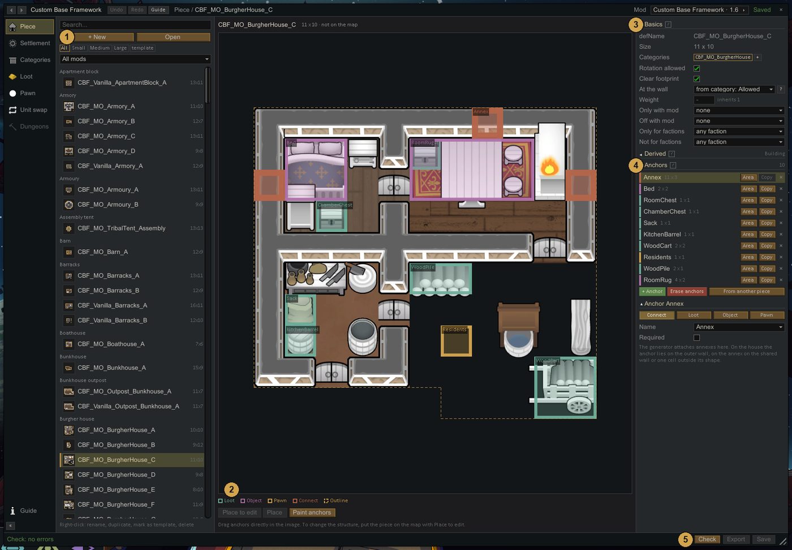
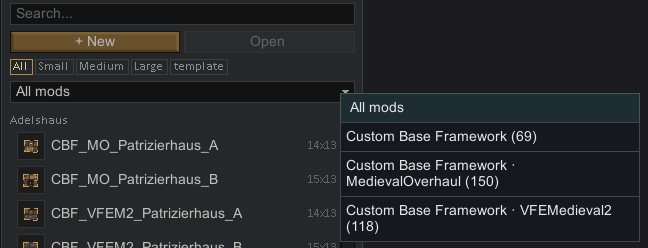
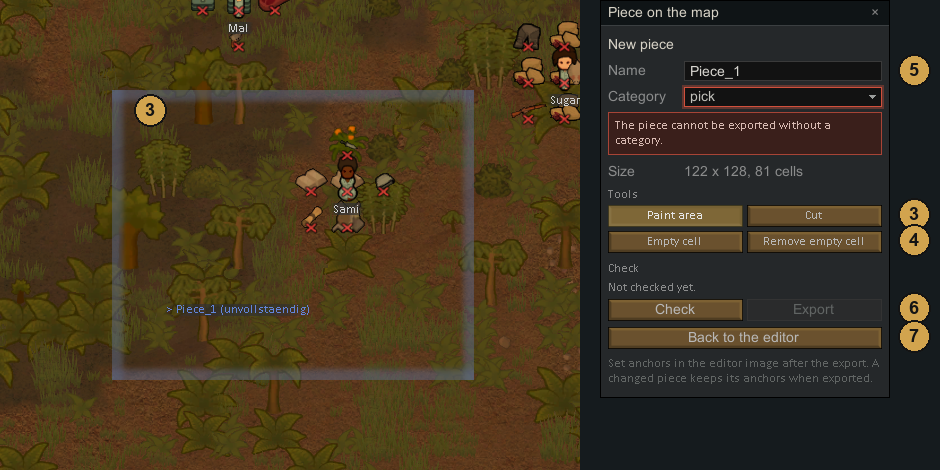
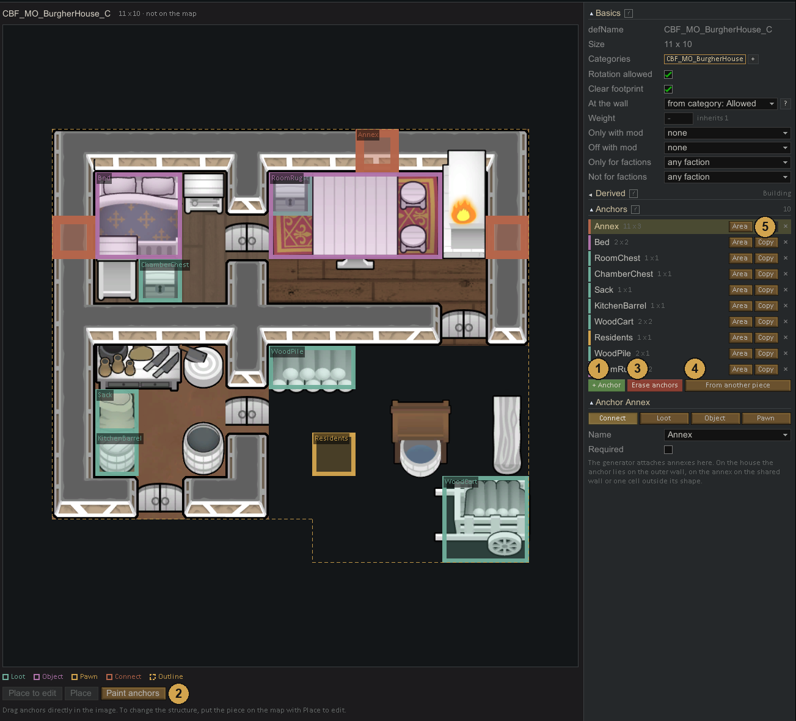
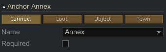

Pieces
Piece
A piece is one building or one stretch of wall. You build it on a map in the game, and the editor saves it as a PieceDef. Houses, workshops, towers, gatehouses and wall segments are all pieces. The generator puts pieces together into settlements.
Every piece belongs to at least one category, for example HouseSmall or Workshop. Settlements ask for categories, and the generator picks a piece from them.
A piece is a template, not a fixed building. Each placed copy comes out different: anchors fill in furniture, loot and people by chance, drawn things can have alternatives, materials follow the map, and annexes dock on at different sides. See Every building differs. So one good house with several anchors and annex spots is worth more than several fixed houses.

- List of pieces, grouped by category. The chips filter by size (Small: longest side up to 8 cells, Medium: 9 to 14, Large: 15 or more) or show templates only. A template is a piece that other pieces copy from; it is never placed itself. The dropdown below the chips, All mods by default, shows only the pieces of one mod. Pieces from a subfolder such as
Mods/MedievalOverhaulcount as a mod of their own there. Right-click an entry to rename, duplicate, mark as template or delete it. - Image of the piece: floor, walls, furniture, and the anchors on top in the colour of their kind. The dashed line is the outline of the piece. Click an anchor in the image to select it. Small tiles elsewhere in the editor show anchors by colour only, without names.
- Basics. Size, categories (the first one is the main category), Rotation allowed, Clear footprint, and for buildings At the wall and Weight. Only with mod and Off with mod tie the piece to other mods: the piece is only placed when all mods in the first row are active, and it is not placed when any mod in the second row is active. You pick the mods from the list of installed mods, inactive ones included. Only for factions and Not for factions limit the piece to certain factions in the same way.
- Anchors of the piece, and below them the details of the selected anchor. See Anchors.
- Check looks for errors in the piece. While the piece is on the map it runs the full export check, otherwise it checks the saved file. The result stands at the bottom left; click it to see every finding. Export writes the piece from the map into its file and only works while the piece is on the map. Save writes changes made in the editor, such as anchors and basics, into the file.
The mod dropdown lists every mod that brings pieces, with the number of pieces:

Draw a new piece

You build a piece in the normal game, on the map of your colony, and then take it into the editor.
- Build the house first with the normal architect tools, in god mode if you like. Build it exactly as it should appear: the walls, floors, doors, furniture and materials you place are what the piece will contain. Pick concrete things here, such as a wooden wall or a specific bed, because the export takes them as they stand.
- Click + New in the Piece tab. The editor window folds away and the toolbox Piece on the map opens on the right.
- Paint area marks the cells that belong to the piece. The area does not have to be a rectangle. Cut takes cells out again.
- Empty cell marks cells that belong to the piece but where nothing is built, for example a yard. Remove empty cell takes the mark off again.
- Give the piece a Name and pick a Category. The picker can also create a new category. Without a category the piece cannot be exported.
- Click Check, then Export. The piece is written into your mod and appears in the list. Export stays locked while the last check found errors.
- Back to the editor opens the editor window again with the new piece selected.
Anchors are set in the editor image after the export. A gatehouse needs a Connect anchor named Wall with at least two cells and one named Outside. Until you have set them, the check lists them as notes.
Change an existing piece
- Place to edit puts the piece on the map so you can change what is built, then export it again. Its anchors are kept.
- Place puts a copy on the map the way the generator would build it, with alternatives and chances rolled. Use it to look at the result. Do not export such a copy.
Both buttons need an open map and do not work for templates.
Anchors
An anchor is a marked area inside the piece where something happens once the piece stands: the town wall docks on, furniture or loot appears, people wait.

- + Anchor creates an anchor and lets you drag its area in the image right away. The size shows while you drag.
- Paint anchors switches the image to painting. Drag a rectangle to set the area of the selected anchor. For Loot, Object and Pawn anchors the rectangle replaces the old area; for Connect anchors it adds cells. With no anchor selected, a new anchor is created. Right-click or Escape ends painting.
- Erase anchors removes all anchor cells inside a rectangle.
- From another piece copies all anchors of another piece with their settings, but without their areas.
- Each row has Area (drag the area again), Copy (same settings, no area) and × (remove). Connect anchors cannot be copied.
Anchor kinds

The four buttons at the top of the details set the kind of the anchor.
- Connect ties the piece to its surroundings. Its Name decides what for:
- Wall: the town wall docks here. A gatehouse needs at least two cells of it. With Required ticked, the piece must stand at the town wall.
- Outside: marks which side of the piece faces away from the town. A gatehouse needs it, otherwise the gate is turned the wrong way round.
- Annex: annexes attach here. See Annexes.
A piece has at most one Wall and one Outside anchor. Annex anchors can be used several times. - Loot places furniture or containers from an object list and fills them from a loot table. An object list is a set of things the anchor can place; a loot table decides the goods inside. decoration only places them empty. unchanged leaves the contents to the mod that brings the object, for example Medieval Overhaul's lootable shelves. - Object places things from an object list, without loot. With Ideology active, Ideoligion building places a building of the owning faction's ideoligion there instead, such as an altar or a ritual spot. - Pawn places pawns from a pawn list, or a Single kind of pawn when no list is set, with a Count.
Loot, Object and Pawn anchors also have a Chance that anything appears there at all. Loot and Object anchors have Second layer: such an anchor may overlap other anchors and clears nothing underneath, for example a fur rug under a table.
The … button in front of a list shows what is in it.
- An anchor whose list does not exist, or whose object list holds nothing that fits the anchor area, marks the piece red in the list.
- If only some objects of the list are too large for the area, the anchor shows a note. Only what fits is placed.
Things from other mods
- A thing built directly into the piece is required. If its mod or DLC is missing, the generator does not use the piece at all, because a missing wall or door would leave a hole.
- A thing placed through an object list is optional. Entries whose mod is missing drop out. If nothing is left, nothing appears at the anchor and the rest of the piece is built. The thing you built under the anchor as a placeholder may come from that mod; it does not block the piece.
- So: build walls, doors and anything the building needs directly. Put devices, furniture and decoration that only some mods bring into an object list.